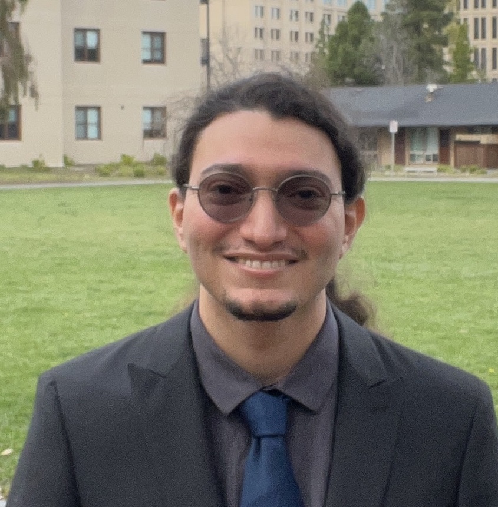

NUS · MARMot
NUS · MARMot
01
Chengyang He
Multi-Agent Robotic Motion Lab (MARMot)
National University of SingaporeNational University of Singapore × Stanford University
A collaboration between the Multi-Agent Robotic Motion Lab and the Multi-robot Systems Lab.
Paper authors
In publication order
NUS · MARMot
Multi-Agent Robotic Motion Lab (MARMot)
National University of SingaporeMulti-Agent Robotic Motion Lab (MARMot)
National University of Singapore
Stanford · MSLMulti-robot Systems Lab (MSL)
Stanford UniversityMulti-Agent Robotic Motion Lab (MARMot)
National University of SingaporeMulti-Agent Robotic Motion Lab (MARMot)
National University of SingaporeMulti-robot Systems Lab (MSL)
Stanford UniversityMulti-Agent Robotic Motion Lab (MARMot)
National University of SingaporeMulti-robot Systems Lab (MSL)
Stanford University NUS · MARMot
NUS · MARMot
Multi-Agent Robotic Motion Lab (MARMot)
National University of Singapore